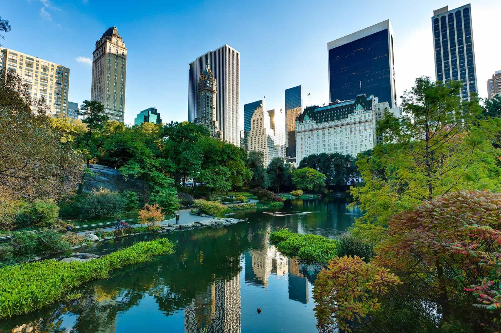
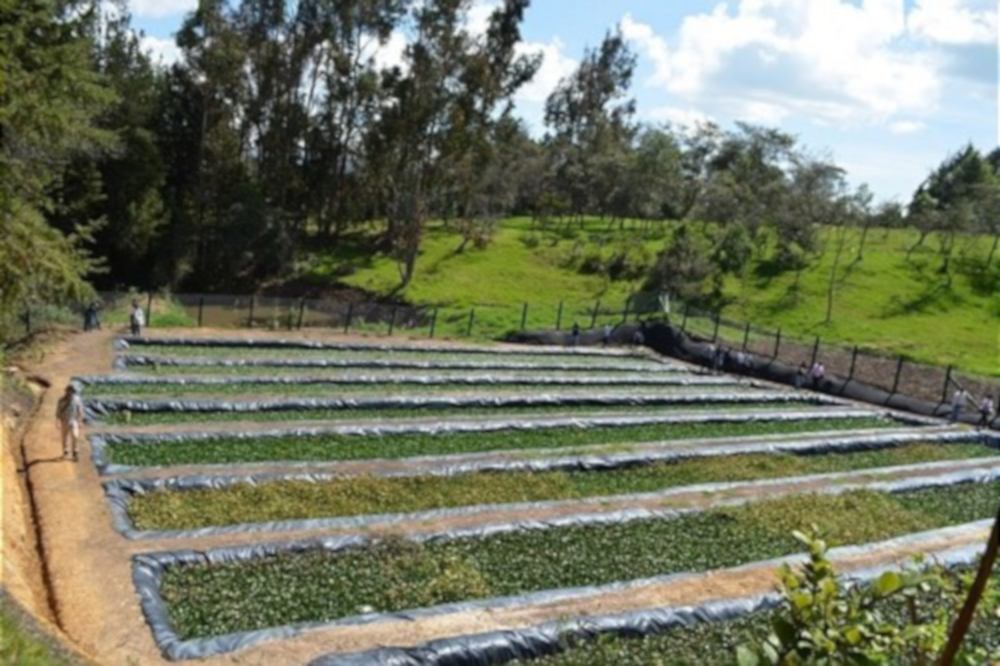

"Tornar as cidades e comunidades mais inclusivas, seguras, resilientes e sustentáveis"
Atualmente mais da metade da população mundial (4,4 bilhões) vive em cidades, e é previsto que esse número irá subir para 68% até 2050, a urbanização é uma das tendências mais transformadoras do mundo.
As cidades compreendem menos de 3% da superfície da Terra, mas concentram uma imensa parte da população, indústria e uso de energia, levando a uma enorme poluição local e degradação ambiental. Nas cidades, aproximadamente 78% das emissões de carbono são decorrentes de atividades humanas, por isso, o ODS 11 visa garantir até 2030 coisas como:

Proteção do patrimônio cultural e natural

Transporte público seguro e acessível

Urbanização inclusiva e sustentável
Exemplos de sustentabilidade
Com 14 mil habitantes, no interior de São Paulo, foi eleita a cidade mais sutentável do Brasil em 2021. Entre as iniciativas de destaque que colaboraram para a pontuação da cidade no ranking, está a campanha Coleta Premiada. Iniciada em 2018, ela ajudou a transformar Morungaba em uma cidade “lixo zero”, ou seja, que aproveita ao máximo os resíduos recicláveis e orgânicos.
A cidade sustenta o título de “A cidade mais verde do mundo”, cedido à ela em 2017 pelo grupo C40 de Grandes Cidade para a Liderança Climática. A cidade é uma das que mais investe no uso das bicicletas pela população. São aproximadamente 400km de ciclovias (que inclusive interligam a capital a outros municípios) e 50% da população usa este meio de transporte para se locomover para o trabalho ou escola. A cidade também investe em "telhados verdes", telhados não utilizados que desenvolvem a flora, gerenciando a água de chuva de forma eficiente e sustentável.